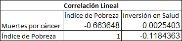

Correlación Lineal
Como se observa en la tabla anterior, el valor de correlación lineal entre las variables Índice de Pobreza e Inversión en Salud es my bajo, cercana a 0. Por esta razón, diremos que no existe una correlación lineal entre estos datos. Lo mismo ocurre con la variable Inversión en Salud con Muertes por cáncer. En este caso, el valor de correlación es aún más pequeño, demostrandonos una independencia lineal de las variables. Por último, La variable de Muertes por cáncer e Inversión en salud tiene un valor de -0,66 por lo que sí existe un grado de correlación lineal entre los datos que se observará más adelante con gráficos correspondientes.